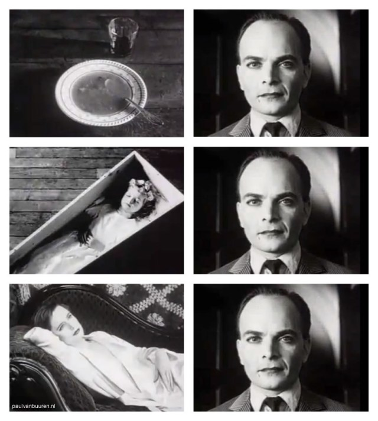

internet and society
https://logicmag.io/failure/freedom-isnt-free/ an article about the difference between free software and open source
https://identitesnumeriques.files.wordpress.com/2011/04/41.jpg
https://en.wikipedia.org/wiki/Folksonomy how the web 2.0 enabled new forms of information organization and creation
questions
how do we socialize online?
how do we create and consume culture online?
how do we organize politically online?
The main question of this week is: how do some aspects of human behavior translate online? How do different ways information flows affect what we can do and say online, and what we can do and say offline? Which behaviors change, and which remain the same?
The first lens we will look through is how we've translated social performance. What were the first forms of sociability on the internet, and how did these forms of sociability evolve to form the landscape of 'social media' as we see it today? We'll move through history from hackers to participative web to monolithic social networks.
The second lens will be that of content creation. How did the models of culture creation and consumption evolve, and how did they differ from previous eras in which different media were the dominant form of sharing? We'll look at remixing culture, free software and open source movements, as well as copyright concerns.
Finally, the last lens will be that of the more classical understanding of political organization, with a particular focus on how digital technologies allow for the emergence of new forms of power structures, and how they reinforce existing means of control.
freedom of information
should we be allowed to do and say anything online?
hackers
what are hackers?
what does it have to do with poaching?
The term hacking originally means "figuring out one's own way to do something", and often implies doing something that was not originally expected. The first "technological" hackers were people tapping into phone lines, and managing to get calls for free, but the practice itself predates digital technology, and can be assimilated to what has bee called "poaching".
Michel De Certeau, in his influential book "The Practice of Everyday Life" (L'Invention du Quotidien), defines poaching as the __tactics__ that are put into place and enacted by receivers/consumers/users in the face of the __strategies__ that are established by creators/producers/institutions.
Hacking is then first and foremost a cultural practice, and our modern understanding of hacking has been influenced by (1) the lack of understanding of the greater public as to what is actually going on when people "hack" and (2) the loss of economic profit from corporations, and the loss of control from governments as a result of the actions of hackers. There exists multiple kinds of hackers in mainstream culture today: "white-hat" hackers, "black-hat" hackers, but neither of these actually represent accurately what hacker culture was at the beginning.
hackers and freedom
free software vs. open-source
the two meanings of "free"
The two main ways that we can understand the word "free" in either "no cost" or "no restriction".
Open-source and free software are closely related. Software started as being by default open-source, since it was shared and distributed amongst a close networks of academics and researchers. It's only when it became expensive to write software (relatively to the cost of hardware) that it made economic sense to make software a kind of intellectual property, particularly under the influence of early companies such as IBM, Microsoft and Apple whose business model depended on exclusive rights to use and distribute software. Bill Gates particularly stood up against the common practices at the time which consisted in sharing source code in order to share software. By the end of the 70s, the copyright rules had caught up and proprietary software was the norm.
In response to that, a group of academics started the GNU project, which consisted in providing open-source software which could also be re-used in whatever way the user saw fit.
We will talk more about the implications of open-source in economic terms; the important point for now is that there is a pervasive belief within hackers, and within those who associate with the hacker movement, that more information is always better, that access to knowledge should be unlimited and unregulated, and that one should be judged a posteriori, by its results, rather than a priori.
information wants to be free
from bulletin board systems to the web 2.0
These social practices of hacker culture and the associated ethos of closed-source/open-source, proprietary/free software, are closely intertwined with the the means of communication, whether how they created these cultures, and how these cultures created them.
One the one side, you have things like the early communication systems: SSH, BBS, Usenet, IRC, etc. These were designed to allow for interaction between the participants (except for SSH, which allowed multiple people to use the same machine at the same time), and followed the design of a public message board, or a public chat. It took the web sometime to integrate these models of communication to its architecture (the web was originally made to serve static, non-interactable content). The switch towards a more user-friendly web (one with comments, wikis, blog posts, etc.) has led to what is called the __Web 2.0__.
On the other side, the hacker ethos transpired into some of the largest commercial digital products of our times. Products like MySpace, Facebook, AirBnB or Uber stand in the direct tradition of "hacking", and most companies and institutions now organize "hackathons", associating the practice with a sort of brainstorming. The terms disruption, hack, break, find their roots in these communities.
the participative web
from construction to contribution: user-generated content
Hackers and the hacker ethos laid out the foundation for new and complex phenomena: the participative web, and social media. The switch to the Web 2.0 is then a switch in scale and usability. It becomes easier to edit things live, to set-up complex systems like a blog or a personal page, and to interact with webpages in ways that were either new or previously restricted to non-web systems (e.g. google maps, google drive, etc.). The Web 2.0 became emblematic by the platforms that appeared: MySpace, Wikipedia, YouTube, Facebook et. al.). Anyone can now theoretically say anything to anyone else. Information is free.
One of the first manifestations of these new possibilities is the creation of cultural groups online. With the streamlining of information sharing, and the reduction of friction in user interfaces and user experiences, sub-cultures started to develop (around Second Life, MySpace, Tumblr, etc.), around shared tastes, interests and activities. Exclusively-online cultures, such as MUDs (Multi-User Dungeon), which have been around as early as the 80s are now a possibility, and individuals are no longer restricted by lack of access or geographic remoteness.
This abundance of access has another consequence. It is no longer necessary to ask permission from traditional content-producers (e.g. newspapers) in order to publish and discuss something. Social media (like IndyMedia, Ohmynews, Rue89) were set-up in order to bypass the censorship and barrier to entry in existing dominant media. The result of this lack of moderation isn't always the magical appearance of high-quality content, but rather a complicated intertwining of broad tendencies, existing cultural agendas and economic incentives.
social media
the massification of the participative web is social media
we moved away from social networks for producers towards social networks for consumers
Once all of these technologies are in place, we get what we call "social media". The difference here is that these platforms offer an alternative which switches the focus to the real, identifiable self, and away from the completely fictional personas.
While previous systems (BBS, UseNet, IRC, Wikipedia) are also social networks, the ones we understand by "social network" today are definitely ones that relate to who we are "officially". For example, Facebook and Google are two platforms that have enforced real name policies, and multiple others allow users to be "verified", by establishing a proof of who they are offline, and online.
A social network is therefore a platform in which every user has a personal page, and can interact with other users' personal pages. It is the massification of blogging (doing), combined with the richness of identity building (being).
social postures online
between doing and being, fictional and real
Dominique Cardon has a visual matrix (see context) which maps out the different types of behaviors that can be associated with different locations (platforms). This matrix runs along a DOING <> BEING axis, where doing implies more active contribution and creation of original content, while being implies only (more or less) strategic display of information.
societies and infrastructure
different infrastructures can facilitate different cultures
the ideals of earlier sociabilities online still inform the discussions today, even though they might not be the most dominant anymore
The development of digital platforms helped create three groups of people which overlapped to significant extents: producers, hackers and consumers. The producers functioned in the very early days in a mode of REAL DOING, that is, their real identities were linked to their actions, which usually resulted in copying, creating or receiving software.
As software became commercialized, and as the difference between (known) professionals and (unknown) amateurs became more clear, hackers started acting within the FICTIONAL DOING, where real identity didn't matter as much. The founder of the Free Software movement, Richard Stallman, was known online by his acronym (RMS) than by his full name.
Hackers and commercial producers then developed a first version of tools which were used for more and more FICTIONAL BEING, along with FICTIONAL DOING. These included blogs, wikis, personal pages and profiles, as well as online game-worlds.
Finally, with the advent of commercial, holistic social media, the tendency pushes even further towards REAL BEING. This doesn't mean that we are all exposed fully all the time, but rather that we acknoweldge that it is no longer the point to project completely fictional personas. Still, if the anonymous actions at some stage of the internet are no longer the reality of the situation, they remain a large inspiration for the internet was and could still be.
internet and power
https://github.com/periode/politics-of-code/blob/master/assets/readings/02-space/Fraser_RethinkingPublicSphere.pdf a good summary and critique of habermas' conception of the public sphere
http://www.arabnps.org/files/2016/03/ArabNPS_Egypt.pdf a report on the consequences of digital mobilization after 2011 in Egypt
http://www.citizen-ex.com/ a visualization of which countries your data goes through
forms of organization
how do we organize politically online?
The internet has enabled forms of self-regulation for online-specific projects. The two most significant ones are Wikipedia and Linux. Wikipedia is structured around low-level self-regulation (editors regulate each other without direct intervention of higher echelons of the hierarchy). The editors comment, refute and approve each other's contributions which enables the emergence of quality content. Linux, on the other hand, is developed in a strict vertical fashion. While anyone can theoretically contribute to the kernel (the core of the Linux ecosystem), it is up to the creator, Linus Torvalds, to ultimately approve or deny the final integration of the contribution in the kernel. Both of these forms of organization are based around the idea of contribution: it is what you add to the commons that is the only criteria for judgment.
Another form of political organization is the one that integrates with existing structures (e.g. local or state governments). The improved means of communication through digital channels allow us to re-imagine the idea of direct democracy. Each one can theoretically directly contribute to the public debate.
As J.R. Licklider put it: “The political process would essentially be a giant teleconference, and a campaign would be a months-long series of communications among candidates, propagandists, commentators, political action groups, and voters. The key is the self-motivating exhilaration that accompanies truly effective interaction with information through a good console and a good network to a good computer.”
types of democracy
-> representative democracy
-> participative democracy
-> liquid democracy
Beyond the simple ways that public discourse has evolved, effectively amplifying fringes by connecting previously disparate groups, and by projecting them into the mainstream discourse, the internet has also enabled new ways of participating in the governmental process.
Historically, representative democracy has developed because there was the physical impossibility for all citizens to contribute to governance, therefore electing representatives to act upon their political wishes within the government. With the modernization of communication infrastructure, and before the internet, it became possible to consult the people for exceptional cases at a large scale (referendums) or ordinary cases at a small scale. These interventions of participative democracy were still one-offs, since it wasn't sustainable to continuously maintain them.
Finally came the model of liquid democracy: if we can all participate to everything all the time, it is not realistic to assume that all citizens will have equal expertise on topics. Liquid democracy is a model which assumes that each citizen has a voting "token" and can delegate that token to someone whom they trust on a particular issue, thus connecting the online-based model of expertise of individuals with the more traditional idea of voting structures.
the online public sphere
from habermas...
... to twitter
Any of these forms of democracies rely on an idea called the "public sphere". The public sphere is a concept developed by Jurgen Habermas in 1962 in which he highlights the distinction between the state and the public arenas of citizen discourse. Politics do not exclusively happen through the state: they happen through semi-formal and informal, speech-based, exchanges between informed citizens (private persons discussing public concerns). The public sphere is to debating and argumenting what the market is to buying and selling. However, while an essential component of democratic life, the public sphere as originally described had some issues: class and gender distinctions, state manipulation due to state welfare (public funding of various institutions, from media to entertainment to unemployment) and the illusion that the bourgeois, liberal public sphere is the only public sphere (disregarding anything dissenting discourse as a valid political discourse).
How does the digital public sphere change that? As we've seen there was a shift between the roles of fictional and real personas online. While fictional personas online used to be understood as tokens of anonymity, and therefore the means to judge someone exclusively on __what__ they had to say, real personas online have brought back the ideas of class and gender distinctions.
While the existence of multiple, dissenting discourse can be seen as a proactive force for democracy, the illusion of one single "sphere" has underestimated the presence of filter bubbles, and qualified them in negative terms instead of working around them to make them communicate. The promise of the digital public sphere was for a long time that "everyone would have their voices heard", but it quickly became the reality that "everyone's voices could be drowned in noise".
the social media revolutions
what was the impact of social media in offline 'revolutions'?
(not all revolutions are "good" revolutions)
Social media has therefore also enabled the development of fringe groups, of those that were not the "traditional" public sphere, from dissidents in Egypt and Iran to white-supremacists and black blocks.
Overall, social media helped with the revolutions insofar as it gave a unity and a visibility to previously isolated voices. It then allowed for precise coordination during specific protest movements (e.g. using Blackberry Messenger in Hong-Kong, Twitter in Egypt and Iran).
However, it stopped being useful for two reasons: because of the lack of unity required for long-term political organization, and because other political forces entered the online sphere, both directly (creating accounts on these platforms and influencing the objects of discourses on them) and indirectly (understanding the processes through which information is shared, and to whom, in order to act pre-emptively through targeted censorship).
government response
censorship has moved from blanket prohibition...
... to upstream control of commercial platforms, ...
... to customized targeting of dissidents,...
... and pro-active disinformation (from Obama to Putin)
If governmental response did take some time to develop, it was mostly because they didn't quite understand the means through which censorship could work in this new ecosystem. While censorship was historically based on specific choke points through which institutions could exert their power (publishing houses, royal approval, etc.).
With the advent of the participative web, it became a lot more complicated to limit the flow of information: no one needed any approval in order to publish something.
The means of government censorship manifested themselves in three different ways:
- first, they realized, through the copyright mechanisms mentioned earlier, that it was possible to leverage the incentives and knowledge of commercial platforms in order to constrain the flow of information and to identify the real personas of posters.
- second, with the ability to identify posters, it became easier to target individual dissenting voices, approaching censorship "from the bottom-up" rather than through blanket prohibition.
- third, state actors have used the new configuration of the digital public sphere to spread disinformation campaigns, a new, computational form of propaganda through which public discourse is hijacked by a heterogeneous assemblage of real and fake social media accounts.
government surveillance
how does government surveillance work?
how does this surveillance affect the political process?
Censorship is only the active phase of a two-part process. The first part is that of surveillance and, again, while it is a political priority which predates the internet, large-scale surveillance was made possible with the advent of digital technologies. While, before, one had to physically follow someone to know what they were up to, or to rely on a network of human informants (HUMINT), contemporary methods have switched towards a tracing of digital signals left in the wake of the surveilled individual's doings (SIGINT).
This surveillance network is composed of three main vectors:
- upstream: the probing of internet cables to directly intercept internet traffic
- downstream: the request for confidential information to cooperating commercial entities
- legal: the use of territorial legal exclusivity in order to access data which transits through the national terrority. since the internet is designed as a distributed system (i.e. a message can potentially go through any node in the network), it is inevitable that any message could enter a legal territory and be subject to its laws.
internet and creation
digital arts and culture
if culture is understood as the creation, exchange and reception of artefacts (stories, texts, songs, jokes, etc.)...
how have digital tools in general affected the creation of culture?
Looking at culture more specifically through the lens of arts and humanities, culture has to some extent always been affected by the means of dissemination it relied upon. The ease with which a certain kind of meaningful message can be created and shared is essential to the "flourishing of the arts and sciences", and therefore needs some sort of protection, in the form of copyright.
What happens when the means are so democratized that anyone can be an artist?
downloading vs. uploading
-> how do computers affect the consumption of culture?
-> how do computers affect the creation of culture?
Both the consumption and creation of culture were heavily influenced by other technological advances which weren't related to communication technology (i.e. the internet). It stands in the wake of similar technological revolutions, such as the printing press (for books) as well as the gramophone (for music) and the film (for visual arts). As such, it is not so much the internet, but the computer which enabled a new way of doing things; with computing, it became incredibly easier to receive, create and distribute user-generated content.
The lowering of barrier to entry for the web 2.0 made it incredibly easier for anyone to have a recording studio, editing suite or publishing house in their own houses.
copying machines
computers are first and foremost copying machines, and the copyright industry was based on the idea that a perfect copy couldn't exist.
thus redefining the idea of access and ownership
leading to divide between copyright and copyleft
When it becomes so easy to take something, and potentially to share it again while possibly modifying it, the questions of ownership and use need to be asked again and new answers need to be found.
Is it stealing if the original owner doesn't lose their copy? The criminalization of computers and computer use, the downloading and uploading of copyrighted files, came at a moment when the entertainment industry failed to adjust to the new modes of distribution. It is with the advent of iTunes, and Digital Rights Management (DRM), that it became possible to enforce copyright law as it existed. In parallel with these DRM tools, the development of streaming, and thus the rise of lending over owning switched the market; it is now more important to have access to something, rather than to own it.
content regulation
can copyright be assimilated to censorship?
The systems put in place by commercial actors to control information then informed the behavior of state actors. The circulation of folk culture is intertwined with "dominant" culture, in which it is often a vehicle distinct from dominant culture. While dominant culture can assimilate it and use it as a myth (hackers as lone coders rather than social tinkerers, keffiehs as fashion item rather than protection during violent protests). Folklore, culture created intangibly by a small, defined group of people doesn't always follow the line of dominant culture, and it can then be useful to the dominant culture to control its spread.
So copyright in itself is not technically censorship, as the only reasons for copyright to exist are monetary profit and "the advancement of the arts", but copyright holders were the first to show that you can tie someone's digital identity to someone's legal identity.
These forms of culture creation, and therefore of organization, differing from the dominant paradigm now lead us to ask questions about the development of political structures through online organization.
internet and humans
the internet has enabled different ways to create and consume:
-> cultural products
-> social selves
-> political systems
In conclusion, the internet has changed the way the broader public interacts with each other in three broad (and overlapping) domains:
- cultural products have shifted from being the domain of a professional class of producers to a wide range of amateurs
- social selves have been spread out on a surface that ranges from fictional to real, and from active to passive.
- political systems have evolved (particularly for online projects such as Wikis and Open-source), but have also adapted to new means of governance.
creating new content
https://www.youtube.com/watch?v=g6-NDTWM8VE endless love remix between george w. bush and tony blair
https://www.egyptindependent.com/egypts-new-war-information/ the techniques of "askar kazeboon" to highlight political hyprocrisy
https://www.youtube.com/watch?v=d6ITGpl5ljk the last zapping, a supercut of television accusing the editors' employer.
creating new content
remixing content you've found/received...
...can shape culture as significantly as canonical content producers.
concepts of audio editing
-> superimposing multiple tracks
-> cutting audio samples and re-arranging them
-> adding audio effects (noise removal, filters, delays)
The first thing you need to think of when you start working in audio editing is audio quality, Whether you're recording or ripping existing audio from the web, be aware that you can never increase the quality of a sample, only decrease it.
There are some techniques that allow you to "clean up" a sample, but these are always imperfect.
Conceptually, audio editing is about layering in two dimensions: in the first, time-based dimension, the questions are what kind of samples do you lay out from beginning to end? How are these quotes constructing a story, an argument? What is your introduction, your middle, your end? While this might seem obvious in the 21st century, the ability to mix different audio clips in order to construct a broader point is very new, and concommittant to the technological developments of the tape recorder.
In the second dimension, it's about laying out tracks at the same, but letting them coexist in the frequency domain. Some sounds are lower frequency, some or higher frequency, and if they don't overlap, we can all hear them distinctly.
concepts of video editing
-> juxtaposition of images (gestalt)
-> creation of tension and release
-> intersection of existing footage and new footage

As the Kuleshov effect has shown, the simple juxtaposition of images can have radically different meanings and evoke different emotions.
The art of editing is therefore a formal art: where does a picture end? how is the next picture connected to the previous one? what "link" is created to help the viewer construct a continuum in their minds?
But also a semantic art: what are the different layers of meaning in a particular image, and how do those latent layers arise when put into a particular context?
practice
create a short audio/video political commentary
-> find 3-4 videos online
-> download them
-> edit/recombine them using only audio or only video to create a new message